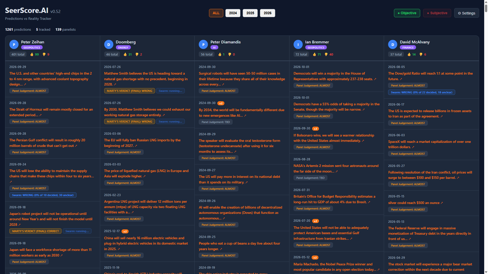

Heuristics, aggregation math, information flow: MiroFish public service vs Delphi3080 vs DelphiCursor
Marty Schoffstall, co-author
| Dimension | MiroFish public service | Delphi3080 | DelphiCursor |
|---|---|---|---|
| Judge | Multiple role agents | Simulated specialists, 32B local | Single Opus-class, may browse |
| Knowledge graph | Core deliverable | Reused (Graphiti/Neo4j) | None — fixture-only |
| Latency/claim | Minutes–hours | ~15-30 min | 1-5 min (300s cap) |
| Cost | High | $0 marginal | Flat-fee Cursor |
| Scale | Deep research per claim | All graded preds daily | Contested only (Mode A) |
| Failure stance | Run must complete | Error-mark, queue survives | Validate + retry ≤2 |
